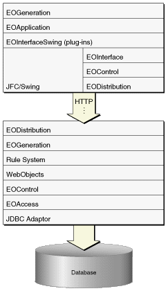

The EOGeneration layer, defined in com.webobjects.eogeneration and com.webobjects.eogeneration.client,
dynamically generates user interfaces in Java Client applications
which use the rule system. It is not used in nondirect Java Client
applications. This layer analyzes your application's business
model (defined in an EOModel) and, using a sophisticated set of
rules, generates a user interface. The user interface description
is then sent to the client where it is executed. You can alter the
rules in a number of ways for customization purposes.
The generation layer, along with the WebObjects rule system, are the elements that make a Direct to Java Client application different from a nondirect Java Client application. They are illustrated in Figure 2-3.
Figure 2-3 The complete stack of WebObjects layers in Direct to Java Client
